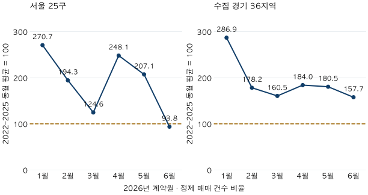

거래량 읽기 · 같은 건수의 다른 분모
아파트 거래량, 평년보다 많으면 회복일까? 서울·경기 기준 비교
2026년 상반기 서울·수집 경기의 계약 건수를 같은 달 평균과 비교합니다. 3년·4년·5년 분모, 평균·중앙값, 직거래 공시 단절을 나눠 평년 대비 거래량을 읽어 보세요.
분석 기간 · 2026년1~6월 계약 · 기준2022~2025 | 보유 자료 스냅샷 생성 · 2026-10-04
아파트 거래량이 평년보다 많으면 시장이 회복됐다고 볼 수 있을까요? 2026년 상반기 서울의 정제 매매 계약 37,004건은 2022~2025년 같은 상반기 평균의 173.2%입니다. 하지만 2025년 상반기 38,638건보다는 적습니다. ‘평년보다 많다’와 ‘작년보다 늘었다’는 분모가 다른 문장입니다. 수집 경기 지역과 월별 결과까지 같은 기준으로 비교해 보겠습니다.
이번 ‘거래량’은 공식 공표 거래량과 같은가요?
이 글은 국토교통부 실거래 공개자료를 자체 정제한 계약일 기준 건수입니다. 한국부동산원 R-ONE 안내는 부동산 거래현황통계가 신고일 기준이며, 계약일 기준의 실거래 공개자료와 목적·집계·공개 방식이 다르다고 설명합니다. 따라서 기사에 실린 공식 거래량과 아래 숫자가 다르다고 어느 한쪽을 오류로 단정하면 안 됩니다.
주 비교에는 해제·직거래를 제외하고 토지임대부를 뺀 정제 매매 계약 한 건을 한 표로 셉니다. 전체 전용면적을 포함하므로 앞선 84㎡ 가격표의 거래 건수와는 다릅니다. 계약 건수가 서로 다른 집의 수, 실제 입주 가구 수, 등기 완료 수 또는 매물 수를 뜻하지도 않습니다.
범위는 서울 25개 구와 수집된 경기 36개 시·구입니다. 인천과 미수집 경기 지역을 포함한 수도권 전체가 아닙니다. 자료는 2026년 10월 4일 생성 스냅샷에서 2026년 1~6월을 고정해 선택했습니다. 최근 7~9월의 신고 지연을 임의로 보정하지 않았으며, 6월도 이후 절대 수정되지 않는 확정월이라고 부르지 않습니다. 10월 현재의 거래 속보가 아닌 과거 비교입니다.
‘평년 대비 173.2%’는 어떻게 계산하나요?
이 글에서 주로 쓰는 비교 기준은 2022~2025년 같은 달의 정제 계약 수 산술평균입니다. ‘평년’이라는 말만으로 모두가 같은 연도나 거래 조건을 사용하는 것은 아닙니다. 특히 5년 평균이라고 읽지 않도록 표마다 4년 기준을 표시했습니다.
평균 대비 비율 = 2026년 해당 월 건수 ÷ 2022~2025년 같은 월 평균 건수 × 100
100%면 기준 평균과 같은 건수입니다. 173.2%는 평균보다 약 73.2% 많다는 뜻이지, 173.2% 증가했다는 뜻이 아닙니다. 같은 방식으로 계산한 서울의 상반기 분모는 21,370.5건이고, 37,004 ÷ 21,370.5 × 100 = 약 173.2%입니다. 분모에 소수점이 있는 것은 계약을 반 건 세어서가 아니라 네 해의 건수를 평균했기 때문입니다.
| 계약연도 | 서울 25구 | 수집 경기 36지역 |
|---|---|---|
| 2022 | 6,492 | 20,396 |
| 2023 | 15,455 | 39,922 |
| 2024 | 24,897 | 46,893 |
| 2025 | 38,638 | 55,295 |
| 2026 | 37,004 | 74,398 |
서울의 2025년 상반기는 38,638건이므로, 2026년 37,004건은 전년보다 약 4.2% 적습니다. 수집 경기 지역은 55,295건에서 74,398건으로 약 34.5% 많아졌습니다. 전년 대비와 다년 평균 대비는 둘 다 계산할 수 있지만, 서로 대체할 수는 없습니다.
상반기 전체와 마지막 6월의 모습은 같을까요?
서울은 다릅니다. 1~5월의 건수는 각각의 4년 동월 평균을 웃돌지만, 6월은 5,002건으로 동월 평균 5,332건보다 적습니다. 반면 수집 경기 지역의 6월 13,896건은 동월 평균의 157.7%입니다. 상반기 합계만으로 모든 달이나 모든 지역이 같은 방향이라고 말하기 어렵습니다.

| 2026년 | 건수 | 4년 평균 건수 | 4년 평균 대비 | 4년 중앙값 대비 | 3년 평균 대비 |
|---|---|---|---|---|---|
| 1월 | 5,121 | 1,892.0 | 270.7% | 279.2% | 229.0% |
| 2월 | 5,479 | 2,819.2 | 194.3% | 232.0% | 155.5% |
| 3월 | 5,143 | 4,127.5 | 124.6% | 158.3% | 100.8% |
| 4월 | 8,154 | 3,286.5 | 248.1% | 230.8% | 211.0% |
| 5월 | 8,105 | 3,913.2 | 207.1% | 205.7% | 169.7% |
| 6월 | 5,002 | 5,332.0 | 93.8% | 95.1% | 73.3% |
| 상반기 합계 | 37,004 | 21,370.5 | 173.2% | 183.4% | 140.5% |
| 2026년 | 건수 | 4년 평균 건수 | 4년 평균 대비 | 4년 중앙값 대비 | 3년 평균 대비 |
|---|---|---|---|---|---|
| 1월 | 12,032 | 4,194.2 | 286.9% | 287.7% | 251.5% |
| 2월 | 10,117 | 5,678.2 | 178.2% | 162.3% | 151.5% |
| 3월 | 11,948 | 7,443.5 | 160.5% | 158.5% | 139.9% |
| 4월 | 12,855 | 6,987.8 | 184.0% | 172.9% | 164.6% |
| 5월 | 13,550 | 7,508.8 | 180.5% | 167.2% | 155.4% |
| 6월 | 13,896 | 8,814.0 | 157.7% | 149.4% | 128.2% |
| 상반기 합계 | 74,398 | 40,626.5 | 183.1% | 171.4% | 157.1% |
좁은 화면에서는 표를 좌우로 움직일 수 있습니다. 평균 건수와 비율은 소수 첫째 자리로 반올림했으며, 계산은 반올림 전에 했습니다. 상반기 비율은 월별 비율의 단순평균이 아니라 연도별 1~6월 합계로 만든 분모에 대한 비율입니다.
서울의 6월 건수는 2022년 846건, 2023년 3,395건, 2024년 7,121건, 2025년 9,966건입니다. 네 해의 범위가 넓습니다. 2026년 5,002건을 어느 해와 비교하느냐에 따라 증가 또는 감소라는 문장이 달라집니다. 이 자료만으로 2026년 6월 변화의 정책 원인이나 이후 흐름을 판정하지 않습니다.
2022년을 포함하느냐에 따라 얼마나 달라질까요?
서울 상반기의 4년 평균 대비 비율은 173.2%지만, 2023~2025년 3년 평균을 분모로 쓰면 140.5%입니다. 수집 경기 지역은 183.1%에서 157.1%로 달라집니다. 두 지역 모두 이번 범위에서는 평균을 웃돈다는 방향은 유지되지만, 그 정도가 같지는 않습니다.
2022년 상반기 계약 수는 서울 6,492건, 수집 경기 20,396건으로 다른 비교 연도보다 적습니다. 이 해를 평균에 포함하면 분모가 낮아집니다. 반대로 거래가 많았던 해를 주로 포함하면 같은 2026년 건수의 비율이 작아집니다. 어느 한 기간만 ‘정상적인 평년’이라고 정할 근거는 이 집계에 없습니다.
평균 대신 네 해의 중앙값을 써도 달라집니다. 서울 상반기는 183.4%, 수집 경기는 171.4%입니다. 중앙값이 항상 더 높거나 더 낮은 기준은 아닙니다. 한두 해가 결과를 얼마나 바꾸는지 살피는 보조 기준이며, 마음에 드는 결론을 고르는 장치로 쓰면 안 됩니다.
서울·경기 안의 모든 지역이 같은 결론인가요?
상반기 건수가 4년 평균보다 많은 곳은 서울 25구 중 22구, 수집 경기 36지역 중 35지역입니다. 3년 평균으로 바꾸면 각각 20구와 33지역입니다. 광역 평균보다 많다는 사실을 모든 동네의 회복으로 확대할 수 없습니다.
서초구는 4년 평균 대비 116.7%지만 3년 평균 대비 96.1%, 강남구는 110.4%와 90.1%입니다. 분당구도 109.8%와 91.4%로 100의 위아래가 달라집니다. 아래 표는 이런 사례만 골라 모은 순위가 아니라 미리 정한 61개 지역 전체를 지역 코드 순서로 보여 줍니다.
서울 25개 구 상반기 비교 전체 표
| 지역 | 2026 건수 | 4년 평균 건수 | 4년 평균 대비 | 4년 중앙값 대비 | 3년 평균 대비 |
|---|---|---|---|---|---|
| 종로구 | 308 | 178.8 | 172.3% | 194.3% | 147.6% |
| 중구 | 496 | 326.2 | 152.0% | 177.5% | 124.7% |
| 용산구 | 584 | 379.8 | 153.8% | 167.3% | 127.9% |
| 성동구 | 874 | 1,154.0 | 75.7% | 87.3% | 59.8% |
| 광진구 | 483 | 525.0 | 92.0% | 110.5% | 73.7% |
| 동대문구 | 1,595 | 906.0 | 176.0% | 185.4% | 143.4% |
| 중랑구 | 1,431 | 522.2 | 274.0% | 272.3% | 230.3% |
| 성북구 | 2,303 | 1,077.2 | 213.8% | 215.1% | 170.5% |
| 강북구 | 896 | 323.2 | 277.2% | 274.4% | 226.8% |
| 도봉구 | 1,520 | 562.5 | 270.2% | 257.8% | 225.3% |
| 노원구 | 4,405 | 1,473.2 | 299.0% | 315.9% | 246.8% |
| 은평구 | 1,761 | 728.2 | 241.8% | 231.4% | 200.0% |
| 서대문구 | 1,465 | 797.8 | 183.6% | 195.2% | 148.0% |
| 마포구 | 1,035 | 1,118.2 | 92.6% | 105.6% | 73.8% |
| 양천구 | 1,372 | 916.8 | 149.7% | 164.5% | 120.7% |
| 강서구 | 2,474 | 1,094.5 | 226.0% | 240.1% | 185.6% |
| 구로구 | 2,203 | 891.5 | 247.1% | 264.5% | 207.0% |
| 금천구 | 709 | 270.2 | 262.3% | 256.9% | 225.3% |
| 영등포구 | 1,706 | 1,139.8 | 149.7% | 168.6% | 120.5% |
| 동작구 | 1,320 | 1,034.8 | 127.6% | 161.7% | 102.6% |
| 관악구 | 1,257 | 575.2 | 218.5% | 243.4% | 183.7% |
| 서초구 | 1,211 | 1,038.0 | 116.7% | 119.4% | 96.1% |
| 강남구 | 1,472 | 1,332.8 | 110.4% | 111.5% | 90.1% |
| 송파구 | 2,236 | 1,664.2 | 134.4% | 129.1% | 106.0% |
| 강동구 | 1,888 | 1,340.2 | 140.9% | 144.6% | 110.9% |
수집 경기 36개 시·구 상반기 비교 전체 표
| 지역 | 2026 건수 | 4년 평균 건수 | 4년 평균 대비 | 4년 중앙값 대비 | 3년 평균 대비 |
|---|---|---|---|---|---|
| 수원시 장안구 | 1,611 | 749.5 | 214.9% | 208.1% | 178.2% |
| 수원시 권선구 | 2,569 | 1,236.2 | 207.8% | 185.1% | 176.7% |
| 수원시 팔달구 | 1,453 | 504.0 | 288.3% | 288.0% | 236.6% |
| 수원시 영통구 | 3,336 | 2,011.8 | 165.8% | 141.1% | 137.3% |
| 성남시 수정구 | 707 | 435.2 | 162.4% | 146.4% | 128.8% |
| 성남시 중원구 | 978 | 421.8 | 231.9% | 253.7% | 187.8% |
| 성남시 분당구 | 2,239 | 2,039.0 | 109.8% | 113.8% | 91.4% |
| 의정부시 | 2,683 | 1,649.8 | 162.6% | 152.2% | 140.1% |
| 안양시 만안구 | 1,604 | 586.0 | 273.7% | 283.1% | 233.8% |
| 안양시 동안구 | 3,033 | 1,496.8 | 202.6% | 208.0% | 163.1% |
| 부천시 원미구 | 2,208 | 1,102.0 | 200.4% | 184.5% | 174.0% |
| 부천시 소사구 | 1,169 | 625.0 | 187.0% | 169.3% | 166.3% |
| 부천시 오정구 | 283 | 210.2 | 134.6% | 128.9% | 136.1% |
| 광명시 | 1,972 | 1,039.2 | 189.8% | 187.2% | 151.5% |
| 평택시 | 3,653 | 2,859.8 | 127.7% | 127.5% | 127.6% |
| 안산시 상록구 | 880 | 618.0 | 142.4% | 136.4% | 127.5% |
| 안산시 단원구 | 1,435 | 1,066.0 | 134.6% | 120.2% | 117.2% |
| 고양시 덕양구 | 2,647 | 1,469.8 | 180.1% | 163.4% | 152.4% |
| 고양시 일산동구 | 1,070 | 801.2 | 133.5% | 128.5% | 124.0% |
| 고양시 일산서구 | 1,460 | 1,163.5 | 125.5% | 127.7% | 119.5% |
| 과천시 | 155 | 325.2 | 47.7% | 43.8% | 37.0% |
| 구리시 | 2,323 | 483.8 | 480.2% | 485.0% | 397.3% |
| 남양주시 | 4,623 | 2,260.8 | 204.5% | 190.9% | 175.0% |
| 군포시 | 2,258 | 964.8 | 234.1% | 214.5% | 203.1% |
| 의왕시 | 1,194 | 559.8 | 213.3% | 221.5% | 172.3% |
| 하남시 | 1,683 | 1,260.5 | 133.5% | 122.9% | 108.4% |
| 용인시 처인구 | 1,235 | 741.8 | 166.5% | 160.2% | 152.6% |
| 용인시 기흥구 | 4,707 | 1,642.2 | 286.6% | 257.1% | 238.0% |
| 용인시 수지구 | 3,475 | 2,136.0 | 162.7% | 163.7% | 131.5% |
| 파주시 | 2,132 | 1,628.2 | 130.9% | 124.9% | 120.7% |
| 김포시 | 2,394 | 1,911.2 | 125.3% | 115.4% | 108.6% |
| 화성시 만세구 | 642 | 583.0 | 110.1% | 104.8% | 96.8% |
| 화성시 효행구 | 869 | 506.8 | 171.5% | 168.4% | 148.3% |
| 화성시 병점구 | 1,583 | 730.0 | 216.8% | 179.3% | 173.1% |
| 화성시 동탄구 | 6,501 | 1,990.0 | 326.7% | 281.3% | 267.5% |
| 광주시 | 1,634 | 817.8 | 199.8% | 208.2% | 179.8% |
모든 기간은 현재 보유 아파트 마스터의 지역 소속을 사용합니다. 표의 화성시 구 이름 등을 과거에도 동일하게 존재했던 행정구역으로 읽지 마세요. 과거 행정경계를 복원하거나 당시 지역 전체의 주택 재고를 분모로 삼은 결과가 아닙니다. 같은 단지 집합의 거래만 고정해 본 것도 아니어서 신축·멸실과 수집 대상 구성의 영향을 분리하지 못합니다.
왜 처음부터 5년 평균을 쓰지 않았나요?
보유 원천에서 직거래 여부를 구분할 수 있는 필드는 2021년 11월부터 나타납니다. 실제로 비교 대상의 2021년 상반기에는 거래유형이 전부 미기재이고, 2022~2026년 상반기에는 기재돼 있었습니다. 2021년의 빈칸을 모두 중개거래라고 간주한 뒤 ‘직거래를 뺀 5년 평균’이라고 쓰면 제외한 거래의 범위가 달라집니다.
5년 비교를 확인하려면 같은 제외 조건을 유지해야 합니다. 다음 표는 유효한 가격·면적 등 기본 정제와 토지임대부 제외는 유지하되, 해제·직거래를 포함하는 별도 집계입니다. 2021~2025년 5년 평균과 2022~2025년 4년 평균을 이 별도 집계 안에서 비교했습니다. 앞 표의 중개·미해제 계약과 다른 모집단이며 실제 완료된 매매 건수로 읽을 수 없습니다.
| 지역 · 기간 | 2026 건수 | 5년 평균 건수 | 5년 평균 대비 | 4년 평균 대비 |
|---|---|---|---|---|
| 서울 25구 · 상반기 | 39,580 | 24,428.6 | 162.0% | 164.6% |
| 서울 25구 · 6월 | 5,322 | 5,559.8 | 95.7% | 89.1% |
| 수집 경기 36지역 · 상반기 | 80,853 | 51,288.2 | 157.6% | 177.9% |
| 수집 경기 36지역 · 6월 | 14,884 | 9,999.6 | 148.8% | 152.1% |
예를 들어 서울 상반기는 이 별도 집계의 5년 평균 대비 162.0%, 4년 평균 대비 164.6%입니다. 여기서 두 비율의 차이는 같은 포함 조건 안에서 기준 연도를 바꾼 차이입니다. 반면 앞선 173.2%와 바로 빼면 기준 연도와 제외 조건의 차이가 섞입니다. 어느 숫자가 더 ‘진짜 회복률’인지 고르는 표가 아닙니다.
가장 중요한 반론: 집이 늘면 거래 건수의 의미도 달라집니다
새 아파트가 많이 공급된 지역은 몇 년 전보다 거래될 수 있는 집 자체가 늘 수 있습니다. 이 경우 계약 수가 늘어도 주택 한 채당 거래 빈도는 같은 폭으로 늘지 않을 수 있습니다. 이번 글은 과거 주택 재고의 변화를 반영한 회전율을 계산하지 않았습니다.
금리·정책·매물 구성·신고와 해제의 시차도 계약 수에 영향을 줄 수 있습니다. 같은 달을 맞추는 것은 달력 조건 일부를 맞추는 일이지, 이런 조건을 통제한 인과 분석이 아닙니다. ‘평균보다 많다’를 매수 수요가 강하다거나 가격이 오를 신호로 바꾸기에는 근거가 부족합니다. 당시 자료 빈티지가 없어 과거 그날 화면의 거래량도 재현하지 못했습니다.
거래 회복 뉴스를 어떤 순서로 읽으면 좋을까요?
- 계약일인지 신고일인지 확인합니다. 공식 공표 거래량과 실거래 자료의 계약 건수를 한 그래프에 그대로 붙이지 않습니다.
- 같은 달 또는 같은 누계를 맞춥니다. 상반기 증가를 마지막 달의 증가로 대신하지 않습니다.
- 평년의 연도와 계산법을 적습니다. 5년인지4년인지, 평균인지중앙값인지 확인하고 같은 분자를 유지한 민감도도 봅니다.
- 무엇을 빼고 셌는지 확인합니다. 해제·직거래와 미공시 필드의 처리, 지역·면적 범위가 같아야 합니다.
- 내 단지의 근거를 별도로 확인합니다. 광역 계약 건수가 많아도 관심 단지의 같은 면적 거래는 드물 수 있습니다. 최근 거래 조건과 남은 빈칸을 후보 비교표에 적습니다.
이번 자료에서 서울의 상반기 건수는 다년 평균보다 많고 전년보다는 적으며, 6월 건수는 동월 평균보다 적습니다. 세 문장은 동시에 맞습니다. 판단을 바꾸는 것은 ‘회복’이라는 이름보다 어떤 기간과 무엇을 분모로 비교했는가입니다.
자료·분모·공개 기준·독립 검증
자료: 국토교통부 아파트 매매 실거래가 상세 자료를 정제한 현재 보유 관측. 2026-10-04 스냅샷이며 전체 원천의 참조 종료는2026-09, 이 글의 비교 대상은2026-01~06입니다. 과거 자료 도착 시점은 알 수 없고, 최근월 신고 지연을 추정해 채우지 않았습니다. 국토부 FAQ도 계약일 기준 실거래와 신고일 기준 주택거래통계를 구분합니다. 외부 안내 확인일은2026-10-10입니다.
정제와 집계: 기존 계약 중복·해제 재신고 병합 규칙을 적용한 한 계약을 한 표로 셉니다. 원본 행 개수로 가중하지 않습니다. 주 비교는 유효한 가격·면적, 해제·직거래 제외, 토지임대부 제외의 동일 규칙을2022~2026년 상반기에 적용합니다. 별도5년 민감도는 기본 적격 조건에서 해제·직거래를 포함합니다. 공시 이전 빈칸을 특정 거래 유형으로 복원하지 않았습니다.
분모: 각 달은2022~2025년 동일월4값의 평균/중앙값 및2023~2025년3값의 평균입니다. 상반기는 연도별1~6월 합계에 같은 계산을 적용합니다. 비율은2026건수÷분모×100이며, 평균 대비 초과율이 필요하면100을 뺍니다. 4개 값의 중앙값은 정렬한 가운데2값의 평균입니다. 범위가 짧으므로 장기 정상 수준이라고 부르지 않습니다.
대조: 원천2,196개 월파일과마스터의 식별 정보가 집계 스냅샷과 일치하는지 확인했습니다. 정제fact499,067행의 원가격·면적·해제·거래유형·토지임대부 필드로 별도 적격 판정과 건수를 계산해 관측4,392개 월·지역·정책 셀과 대조했습니다. 광역 분모는SQL과Python으로 각각 계산하고, 기존 서울 계약 달력의2022~2025년1~6월24개 집계도 대조했습니다. 이번에 원천 신고의 진위나 과거 실시간 정보를 외부 검증한 것은 아닙니다.
공개: 464개 공개 집계 JSON에 광역 연도별 월·반기건수,모든비교분모,61지역의5개연도 반기건수를 담았습니다. 2021년의 주 비교 건수는 비교 불가로 남깁니다. 세부 건수10건이상과 포함정책 간 작은차이의 역산 가능성을 확인했으며, 지역연도 최소는43건입니다. 작은 셀이 생기면 연결된 세부 시스템 전체를 숨기는 규칙을 적용합니다. 원본 거래나 개인·단지 식별자는 공개하지 않습니다.
분석·집필: 파파펭귄 (Nobot Kang). 에이전트로 집계 대조·표와 그림 생성·문장 검토를 보조했습니다. 매수·매도 시점이나 지역 투자 순위를 제시하지 않습니다.